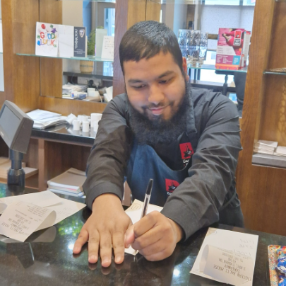
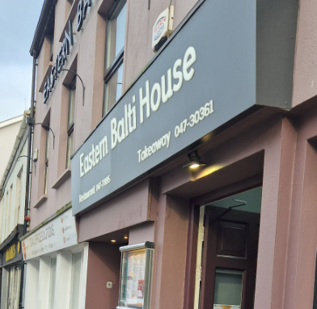

Welcome to the Eastern Balti House
Why not come and visit us.
Here, in the Eastern Balti House, you’ll find all the information about our food, our service, and what makes dining with us special. We focus on fresh ingredients, great flavours, and a friendly atmosphere that suits everything from casual meals to celebrations.
Our menu includes hearty mains, light bites, desserts, and seasonal specials designed to suit all tastes and ages.
Every plate is prepared with care, checked for quality, and served with attention to detail so you can enjoy a comfortable and reliable dining experience.
Whether you’re visiting for the first time or returning for a favourite dish, our staff are happy to guide you through the menu and help you find exactly what you’re in the mood for.
Use the buttons below to see how JavaScript adds interactivity to the page by updating content instantly.
Photos
|
A Customer |
 The Receptionist |
 Entrance |